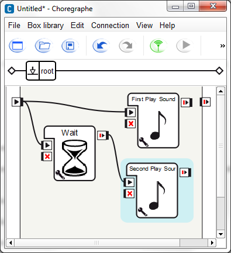
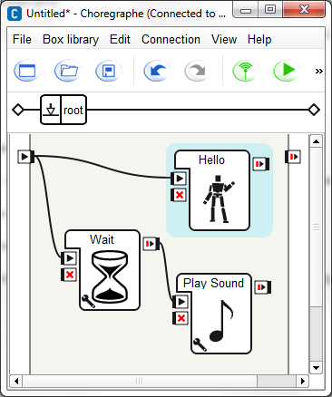

Resources manager¶
The Resources manager is an efficient tool to manage resources between behaviors.
For example, if two Behaviors using the Audio player resource are executed at the same time, you will want them to obey to a certain priority rule such as “if the first behvior is using the resource, the second has to wait the end of the first behavior”.
In this tutorial will see how to manage this kind of situation over several examples.
Without resource management¶
Let’s create the Behavior on which we will be working all along the tutorial:
| Step | Action | Further help |
|---|---|---|
| Drag and drop two Multimedia > Sound > Play sound box onto your root diagram. | ||
Drag and drop a Programming > Time > Wait box onto your root
diagram
and set the timeout parameter to 4 seconds by clicking on the Parameter
 button. button. |
||
| Link the input of the first Play Sound box to the beginning of the root diagram. | ||
Link the input of the second Play Sound box to the output of the Wait box and link the input of the Wait box to the beginning of the root diagram. Your diagram should look like that: Note The Wait box is here to delay the second Play Sound box in order to start its execution when the first Play Sound box has taken the audio player resource. |
||
For both Play Sound boxes, set the music file. Warning Choose 2 long enough and different musics, in order to be able to detect wich box is executed. |
||
Start the behavior using the Without using the Resources manager, NAO plays both music together. Let’s see how we can fix this problem, using the Resource manager. |
 Play button.
Play button.{kind=link}
Lock the resource¶
In this part of the tutorial we will see the effect of taking resources in both Play Sound box.
| Step | Action | Further help |
|---|---|---|
For both Play Sound boxes:
Note If you want to select several resources you can continuously press the Ctrl key and select other resources.
|
||
Start the behavior using the The first Play Sound box is executed and the second is not because the first one has locked the resource. |
Stop on demand¶
In this part will see how we can stop a box that has already locked the resource.
| Step | Action | Further help |
|---|---|---|
| On the first Play Sound box, go to the Resource editor as we did before. | ||
| Change Lock to Stop on demand. | ||
| On the second Play Sound box, go to the Resource editor. | ||
| Change the timeout(s) into Wait n seconds.... | ||
| Set the number of second to 1. | ||
Start the behavior using the The first Play Sound box is executed and stopped by the execution of the second Play Sound box after one second. |
Callback on demand¶
With the Resource manager, when a resource is locked by a behavior, it is possible to call a method when another behavior tries to take the resource too. In this section will see how it works.
| Step | Action | Further help |
|---|---|---|
| On the first Play Sound box, go to the Resource editor as we did before. | ||
| Change Stop on demand to Callback on demand. | ||
| Click the Ok button. | ||
Right click the same box and choose Edit box script in the contextual menu to open the Script editor. You can see that the structure of the code was automatically generated. |
||
Add an onResource method to the script and make NAO says something using the ALTextToSpeech module. The code of the box should look like that: class MyClass(GeneratedClass):
def __init__(self):
GeneratedClass.__init__(self)
def onLoad(self):
self.bIsRunning = False
self.tts = ALProxy('ALTextToSpeech')
def onUnload(self):
self.bIsRunning = False
def onInput_onStart(self):
self.bIsRunning = True
def onResource(self, resource):
self.tts.say("Someone wants to take my resource " + resource)
def onInput_onStop(self):
if( self.bIsRunning ):
self.onUnload()
self.onStopped()
The method onResource will be called when another behavior will want to take the resource. |
ALTextToSpeech | |
Start the behavior using the The first behavior is executed and when the second behavior tries to lock the resource, the first one call the onResource() method. You can hear your robot talking. |
Pause on demand¶
The pause on demand option can be apply only on Timeline box.
In this section, will see how to pause an animation because another behavior wants to take a resource already taken by the animation.
| Step | Action | Further help |
|---|---|---|
| Drag and drop the Animation > Dialog Animations > Affirmation > NAO > GatherBothHandsInFront_01 box onto your diagram. | ||
| Right click on it and choose Edit resources in the contextual menu. | ||
| In the resources list select the Audio > Speakers > Audio player resource, this should deselect all the resources already selected. | ||
| Change Lock to Pause on demand. | ||
Replace the first Play sound box by the Hello box. Your diagram should look like that:  |
||
Start the behavior using the The animation is started, paused when the Play sound box is executed, and restarted when the resource is released. |
{kind=link}